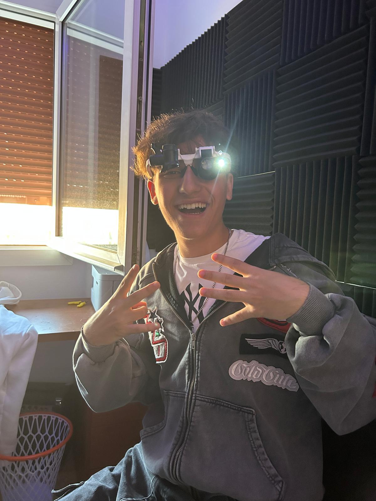
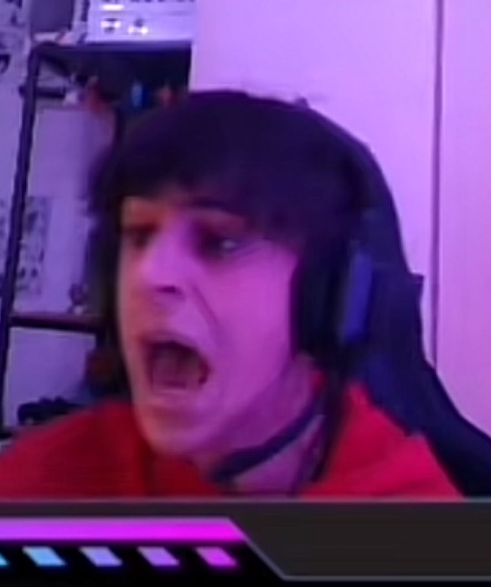

La nostra història
Nuestra historia comienza con una idea clara: crear cajas que protejan, comuniquen y aporten valor a cada producto. Desde nuestros inicios, hemos trabajado con el compromiso de ofrecer soluciones de empaque resistentes, funcionales y adaptadas a las necesidades de cada cliente. A lo largo del tiempo, hemos crecido gracias a la confianza de empresas que buscan calidad, cumplimiento y atención personalizada. Hemos incorporado mejores procesos, materiales más eficientes y un enfoque responsable con el medio ambiente, sin perder la esencia de un trabajo bien hecho. Hoy, seguimos evolucionando con la misma pasión que nos vio nacer, fabricando cajas que no solo cumplen su función, sino que también representan la imagen y el esfuerzo de quienes confían en nosotros.
El nostre equip
El nostre equip està format per experts experts de las caixes, persones que estarien dispostes a vendre a la seva filla per poder conseguir una caixa exclusiva com per exemple una caixa de happy meal 1999 edició ronald mcdonalds super sayan 2. Amb una combinació d'habilitats en disseny, enginyeria i atenció al client, treballem junts per oferir les millors caixes del mercat.
Nosaltres
| Alejandro Reitman Llave Huanca | |
| Daniel Garcia Romero |  |
| Marc Reus Jimenez |  |
Contacta'ns
Si tens alguna pregunta, suggeriment o simplement vols dir hola, no dubtis en posar-te en contacte amb nosaltres.